RULES
Цвет.Игра начинается с выбора цвета вашего государства.
Ход.
В игре есть иконки и
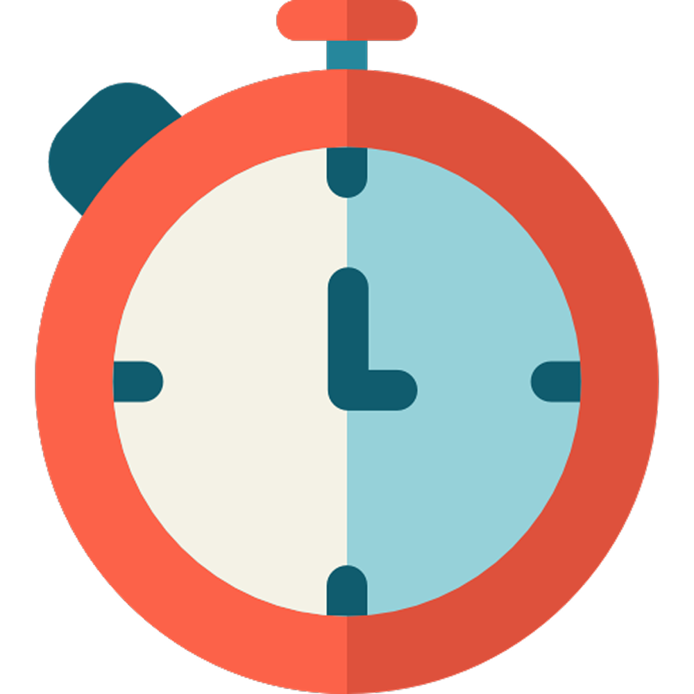
которые сообщают о текущем ходе.В данном примере ход у желтого государства, а таймер показывает оставшееся время до конца хода.
Есть иконки, позволяющие управлять своим ходом:
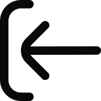
- дает возможность отменить последнее действие на вашем ходу.- при нажатии, преждевременно завершает ваш ход.
Государство.
У каждого цвета в игре есть свое главное здание - государство .
Их может быть несколько для каждого цвета.
За каждое отдельное государство своего цвета, выбрав его, можно совершать различные действия, например: создавать юнитов, строить фермы, заводы и башни.
Соответственно у каждого отдельного государства есть своя территория и свои ресурсы.
Ресурсы.
В игре существует 3 вида ресурсов:
Золото -
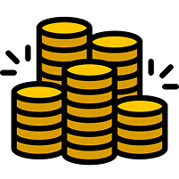
Дерево -
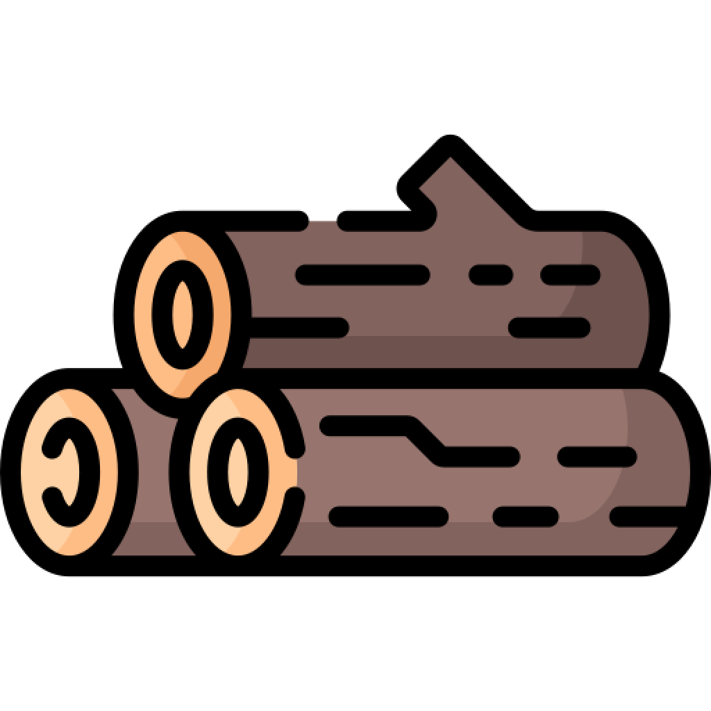
Камень -
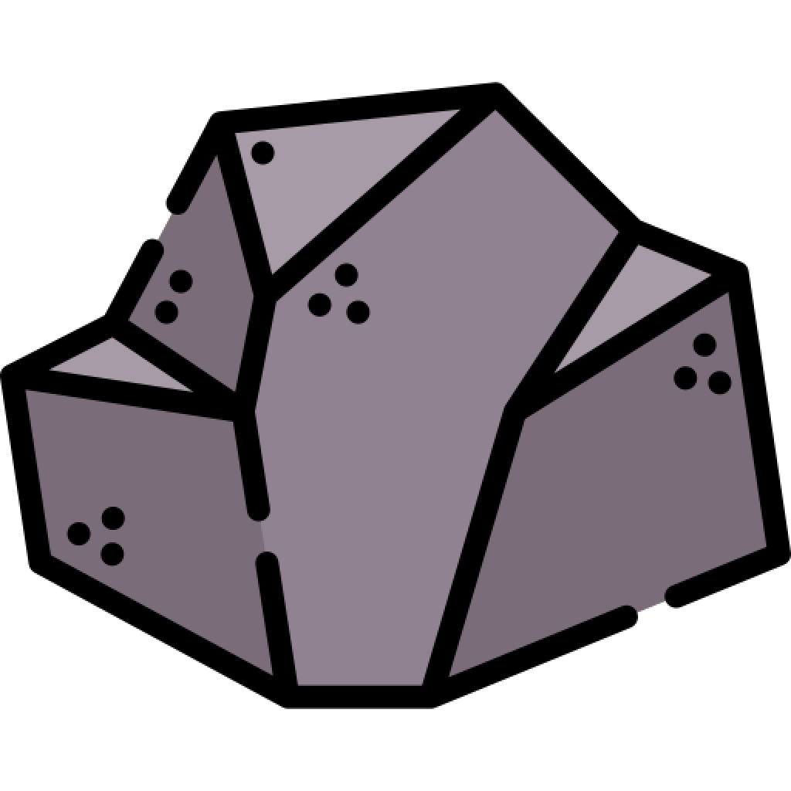
Золото добывается с помощью захваченных клеток, где каждая клетка увеличивает доход на +1.
А также при построении ферм , которые увеличивают доход на +4, но требуют дерева и камня.
Деревья, как и камни, можно добыть 3-мя способами:
1. Это сбор единоразовых ресурсов, при перемещении своего юнита на клетку с ресурсом:
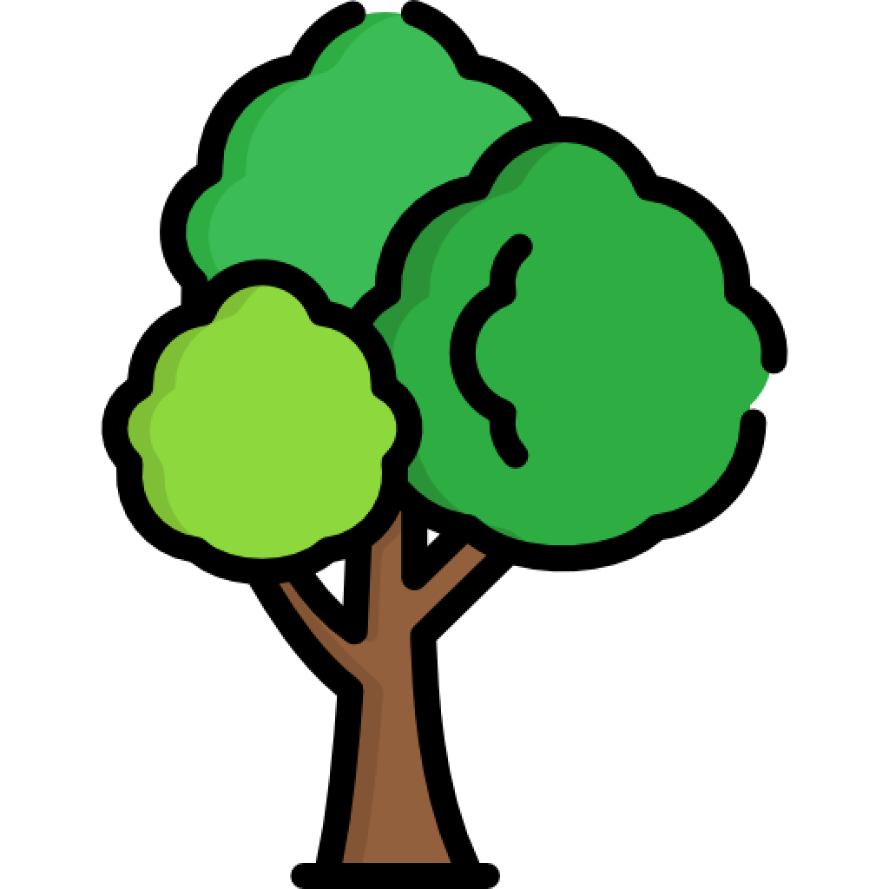
и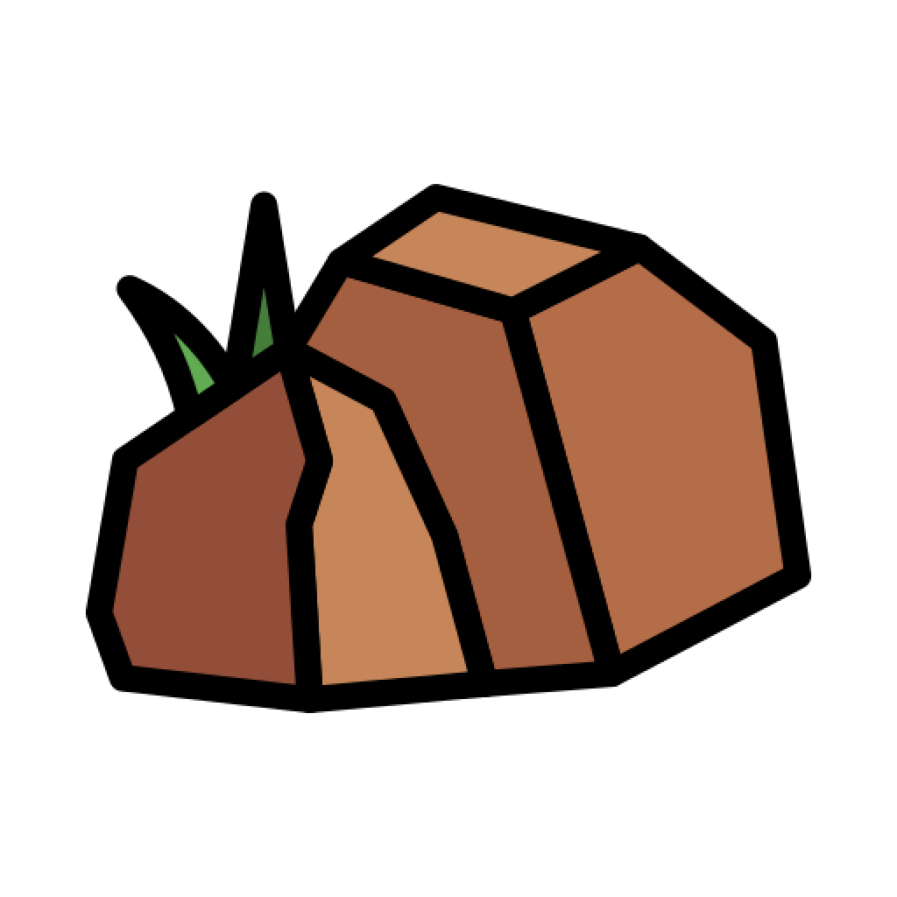
, которые дают 3 соответствующего ресурса сразу.2. Это захваченные месторождения, при захвате своим юнитом клетки с месторождением.
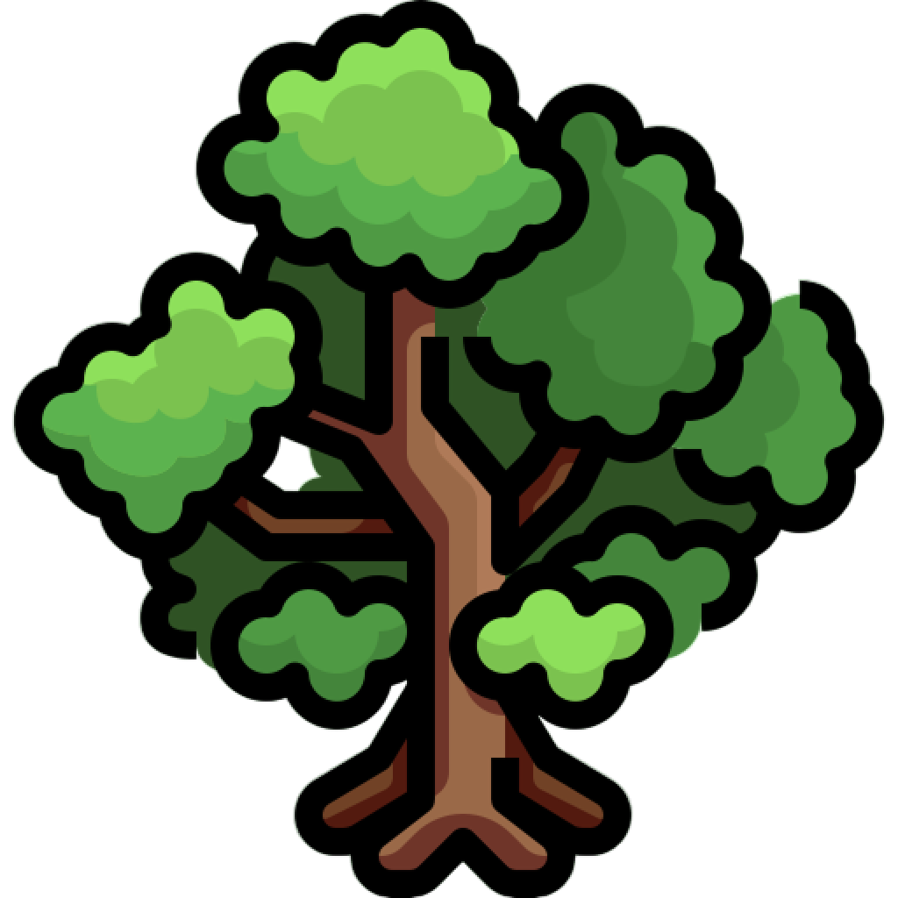
и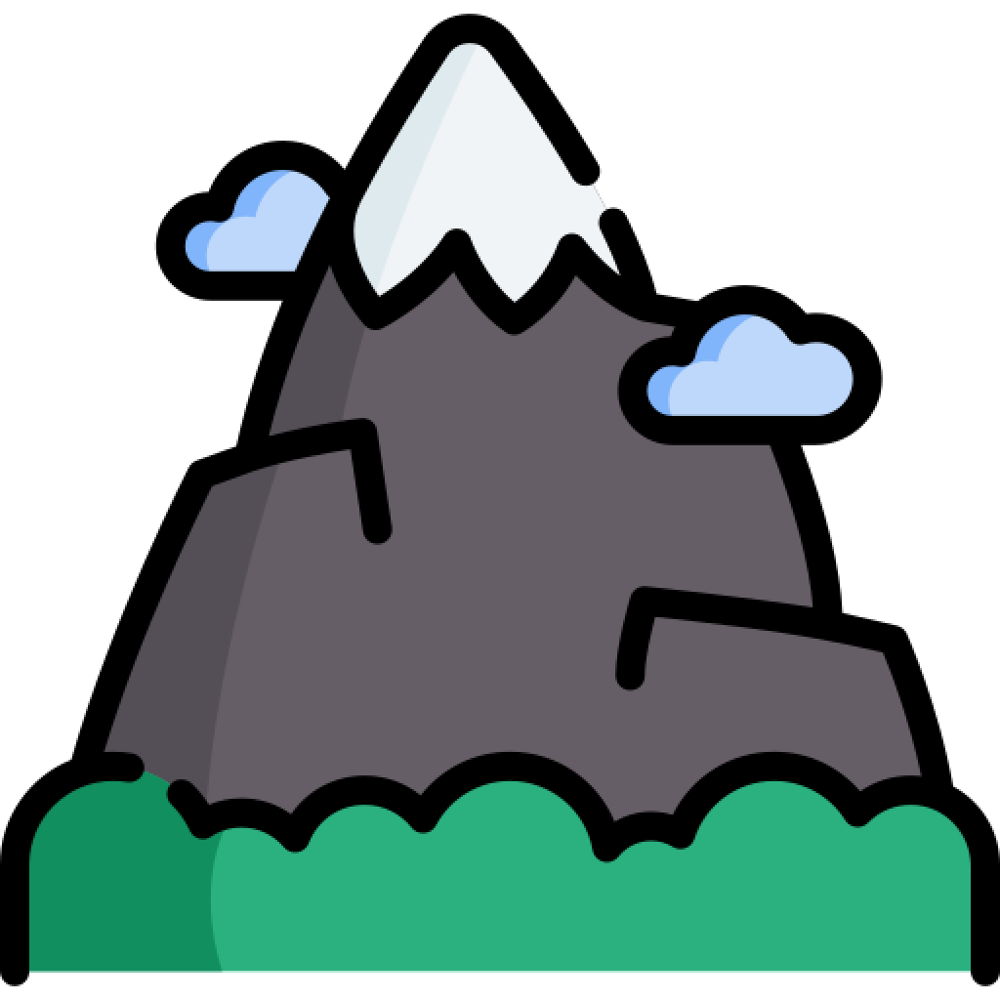
дают +1 соответствующего ресурса за ход.3. Построение лесопилки -
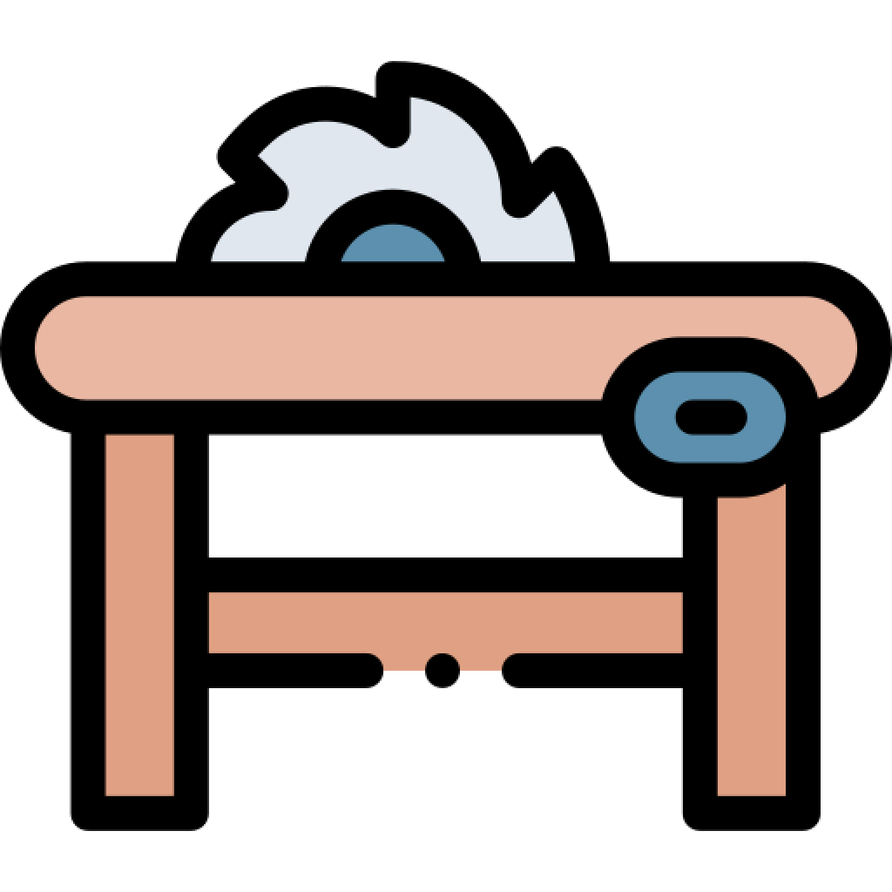
и завода -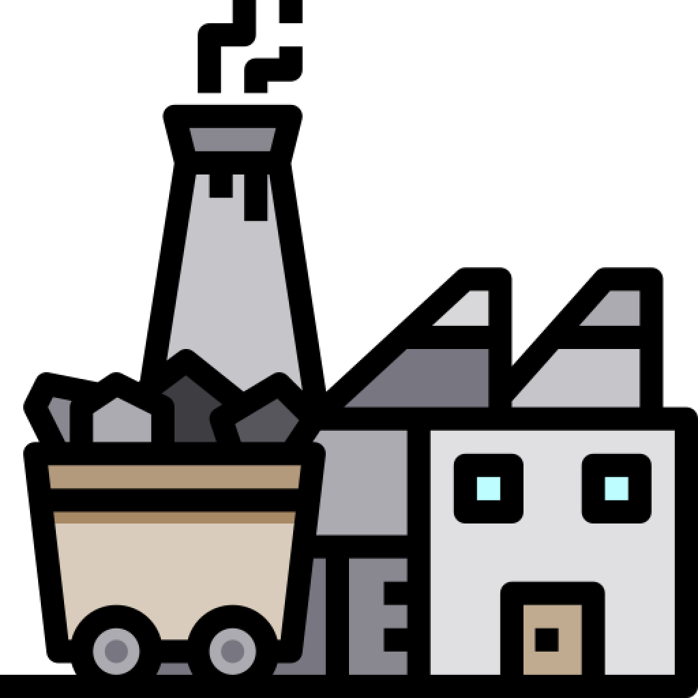
, подробнее о них расписано в "Здания".Месторождения.
и генерируют в радиусе 1 клетки от себя единоразовые ресурсы, если клетка свободна.
Месторождения остаются на всю игру и не могут быть уничтожены.
Здания.
Всего существует 4 здания:
Государство -
Ферма -
Лесопилка -
Завод -
Строить фермы можно только вокруг государства и других ферм.
Каждая следующая ферма стоит дороже предыдущей.
Лесопилка и завод имеют фиксированную стоимость и их можно строить на любой своей клетке. Построенные таким образом здания, увеличат доход соответствующего ресурса на +1 за ход.
Другое дело, строить лесопилку или завод рядом с месторождением, таким образом увеличивая доходность соответствующего здания еще на +3.
Однако, последующие ваши здания, построенные у конкретного месторождения будут приносить так же +1 соответствующего ресурса.
Юниты.
Всего есть 5 типов юнитов. Они отличаются стоимостью, содержанием, силой, защитой и радиусом хода.
Создание любого юнита на свободную клетку приравнивается к действию, а значит только созданным юнитом сходить не получится.
Сила юнита также является его защитой, которую он распространяет от себя в радиусе 1, для своих клеток.
Во первых, это войска - которые могут быть созданы вокруг: - государства,
- ферм и башен: , .
1. Рядовой - : имеет силу 1, радиус хода 3, обходится в 2 золота за ход.
2. Солдат - : имеет силу 2, радиус хода 3, обходится в 6 золота за ход.
3. Танк - : имеет силу 3, радиус хода 2, обходится в 18 золота за ход.
4. Истребитель - : имеет силу 4, радиус хода 2, обходится в 54 золота за ход.
Также существует вложенность, что вокруг юнитов из войск можно создать более слабых юнитов.
Например, вокруг истребителя - можно создать: , , .
А вокруг только .
Ну и конечно же, при создании, учитывается защита нечейной или вражеской клетки.
И последний тип юнитов, это дрон -
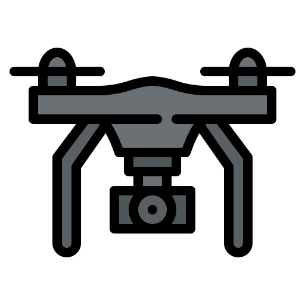
.Он отличается от остальных юнитов своим перемещением и целью.
Дрон имеет радиус хода в 4 клетки, при чем не важно - чьи это клетки и какая у них защита, главное требование - свободные.
При перемещении дрона на определенные сущности, он уничтожает их, оставляя за собой огонь -
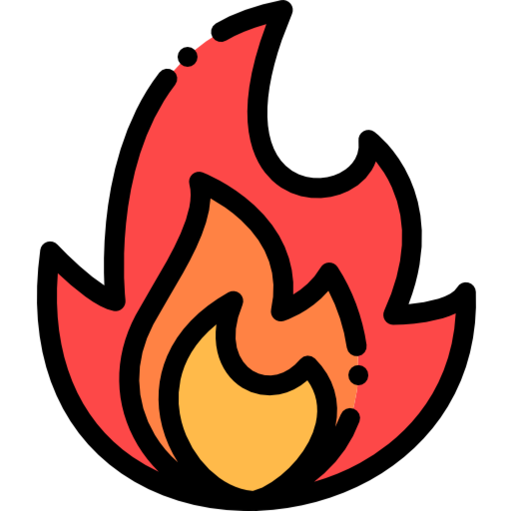
(Подробнее в "Огонь").Целью дрона могут стать:
Вражеские юниты : - рядовой и - солдат.
Вражеские здания : - ферма, - лесопилка, - завод.
Дроны будут доступны только слабым государствам и их количество зависит от разницы мощи с самым сильным государством в игре (Подробнее в "Мощность").
Башни.
Башни служат для защиты своих клеток, распространяя свою защиту в радиусе 1 клетки вокруг себя.
- дает 2 защиты и обходится в 2 золота за ход, а - дает 3 защиты, но обходится уже в 5 золота за ход.
Поэтому могут сломать юниты, чья сила больше 2 : , .
А может сломать только .
Мощность.
Мощность служит показателем силы конкретного игрока, его цвета и складывается из: накопленных ресурсов, учитывая все здания, башни и юниты.
От мощности в игре зависит только возможность создания дронов и их количество. В расчете используются мощности самого сильного и вашего цветов.
К примеру, вы имеете 30% мощности, а самый сильный цвет - 50%. Тогда отношение мощностей составляет: 30 / 50 = 60%. По таблице ниже, вы бы имели возможность создавать дроном, но иметь не более 2-ух.
89% - 66% = 1 дрон.
65% - 56% = 2 дрона.
55% - 47% = 3 дрона.
46% - 32% = 4 дрона.
31% - 1% = 5 дронов.
Огонь.
Огонь - появляется после уничтножения конкретной сущности дроном и блокирует использование клетки в части перемещения на нее, постройки зданий и в экономическом плане.
У огня есть 3 стадии: сильный, средний и слабый. С каждым ходом игрока, имеющего у себя огонь - он угасает. А если огонь был слабый - то просто гаснет.
Сильный огонь появляется при уничтожении зданий: , ,
Средний огонь появляется при уничтожении
Слабый огонь появляется при уничтножении
Игрок имеющий определенную стадию огня, получает соответствующий минус к доходу. 3тья стадия огня снимает 3 золота за ход.
Экономика.
Так как войска и башни содержатся за золото, важно следить за тем, чтобы вашего дохода золота хватало на покрытие ваших потребностей.
Конечно, доход может быть отрицательным, когда вы потребляете больше, чем добываете.
Но, если так будет продолжаться и вашего накопленного золота не хватит для покрытия потребностей, то по завершению хода, все имеющиеся войска погибнут и на их месте появятся могилы -
 .
.Таким образом вы избавитесь от всех расходов на ваше войско, однако только через 1 ход вы сможете получать золото, потому-что прошлое ушло на содержание войск.
Могилы.
- Могилы служат сигналом о том, что юниты погибли от недостатка финансирования государством. Не зря здесь говорится именно о государстве (Подробнее в "Разрезы").Следущий этап могилы это - деревья, они появляются на следующий ход на месте могил на территории цвета, где есть государство. Если государства нет - могилы останутся.
Деревья.
Деревья - , появившиеся от могил, в том числе и от месторождения дерева - , уменьшают доход золота государства на -1, но их также можно собрать в качестве ресурсов.
Разрезы.
Представим прямую из 11 клеток. Все это - игрок красного цвета.
Он имеет одно государство, находящееся на клетке 1, двух юнитов: - рядовой, находящийся на клетке 2 и - солдат, находящийся на клетке 9.
Таким образом он имеет доход в +11 золота, за счет захваченных клеток и расход золота в -8 золота, итого +3 золота за ход.
Это значит, что государство способно покрывать затраты на содержание войск, но тут в дело вступает синее государство,
атакуя нашу территории и захватывает 6ую клетку, разделяя государство красного игрока на 2 государства. Что происходит в этот момент?
Во первых у отделенной части - прямой от 7 до 11 клетки нет здания государства, первым делом государство появляется, если имелась свободная для него клетка.
Во вторых, доход у разделеного государства [7, 11] стал +5 за счет клеток, но содержание войск -6, итого -1 золото за ход.
Предположим, что у второго красного государства нет накопленного золота, а значит с доходом в -1 оно не способно покрыть расходы, таким образом солдат погибнет и появится могила.
А как дела у 1ой части красного государства? Его территория теперь [1, 5], а значит +5 за клетки и -2 за рядового, доход +3, значит, что он будет жить.
Тактика.
В начале игры важно захватить ничейные клетки и месторождения. После этого надо не допустить потерю клеток и защищать месторождения - наиболее лучшие источники ресурсов.
Прежде чем строить сильных юнитов, надо убедиться, что прибыль способна покрыть затраты на их содержание.
Разрезайте территории врагов на части, чтобы разрушить их экономику и уничтножить войска.